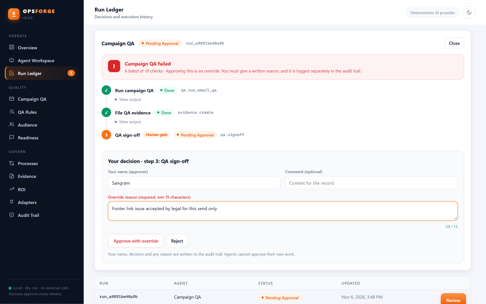
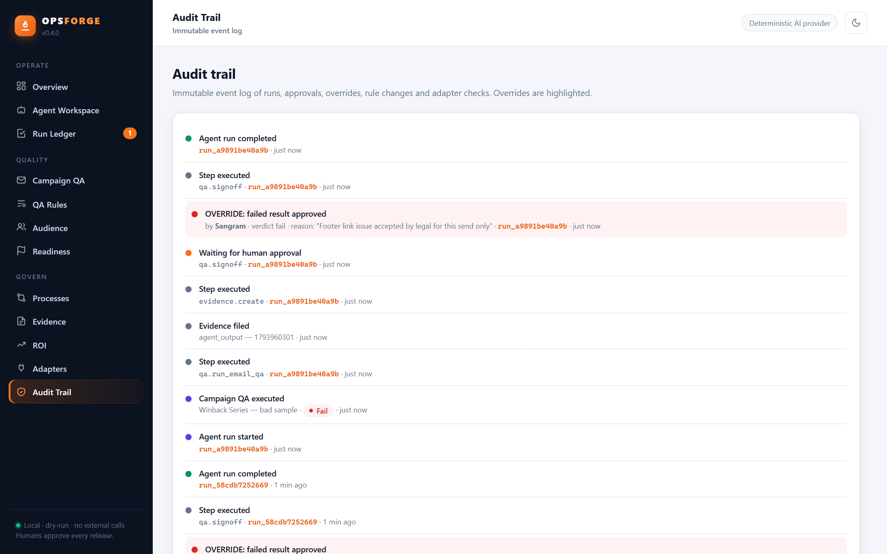

Governed AI agents for marketing & CRM operations. They run campaign QA, audience validation and release readiness, then stop and wait for a named person before anything production-impacting happens.
Most AI-ops demos let the agent act and explain later. In campaign operations, that's how a broken email reaches a million inboxes. OPSFORGE is built the other way round.
Every agent has a fixed plan and explicit tools. Nothing outside the plan executes.
QA sign-off and release recommendations pause until a named person approves. Agents can't approve themselves.
Approving a failed QA or NOT READY result needs a written reason and becomes its own audit event.
Every run, step, output, approval and override is persisted in a run ledger and audit trail.


The audit trail records every agent step and every human decision. Overrides stand out, so a reviewer can see in seconds who accepted a failure, and why.
Python 3.10+ and nothing else: no third-party packages, no external calls. Demo mode seeds a synthetic environment with a decision already waiting for you.